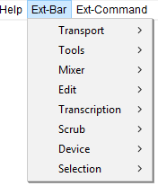

Ext-Bar Menu
Shortcuts can be assigned to these commands if required.
This menu can be turned on (or off) at or the Interface pane of Preferences.
- Click, or hover, on any menu item in the image to read about that command. Skip the image
- 
Transport SubMenu
Extended commands related to play and record. Find out more about the 'Transport' submenu here.
Tools SubMenu
Extended commands to select the tool, for example Time Shift Tool, Envelope Tool or Multi Tool. Find out more about the 'Tools' submenu here.
Edit SubMenu
Extended commands related to editing. Find out more about the 'Edit' submenu here.
Device SubMenu
Extended commands related to selecting a device. Find out more about the 'Device' submenu here.
Mixer SubMenu
Extended commands related to volume. Find out more about the 'Mixer' submenu here.
Transcription SubMenu
Extended commands related to play at speed. Find out more about the 'Transcription' submenu here.
Scrub SubMenu
Extended commands related to scrubbing. Find out more about the 'Scrub' submenu here.
Selection SubMenu
Extended commands related to selecting. Find out more about the 'Selection' submenu here.